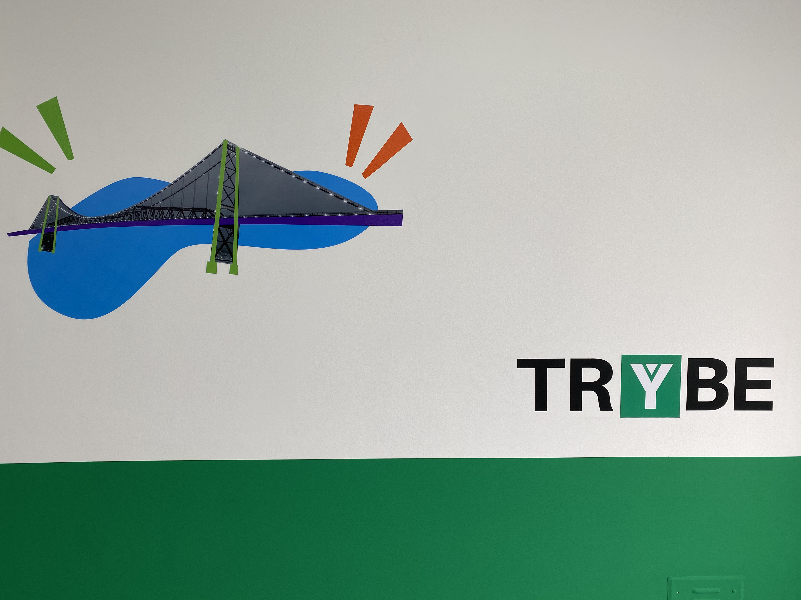

Índice
Nome: Luiz Fernando Bleyer de Faria

Uma breve descrição sobre Luiz Fernando, Brasileiro Florianópolis/SC,
39 anos, Apaixonado por tecnologia e computação comecei por volta de 1996
com meu primeiro computador. Utilizei e testei informalmente
praticamente todas as versões beta do Windows XP. Minha primeira
experiência foi uma breve passagem como operador de sistemas em uma
empresa de gerenciamento de risco e rastreamento de veículo.
A maior experiência de minha carreira foi em uma empresa de grande
porte de Florianópolis onde acompanhei toda a transformação ágil vivida
pela empresa passando por Scrum, SaFe e Kanban.
Atualmente é estudante da Trybe Florianópolis
Blog de automatização de testes com Robotframework